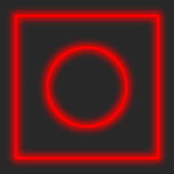
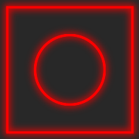

2020-02-18
I bumped into an article today about “Bloom effect in Go”. It describes how to get that effect by drawing, blurring, and drawing again, using a few Go libraries, resulting in something like this:

I thought “hey, I bet you can do that in ImageMagick, too!1” So I tried. After a bit of fiddling, I arrived at this:
convert -size 200x200 xc:'rgb(40,40,40)' \
-stroke red -fill 'rgb(40,40,40)' -strokewidth 6 \
-draw 'rectangle 10,10 190,190' \
-draw 'circle 100,100 100,50' \
-gaussian-blur 20x5 \
-fill none -strokewidth 3 \
-draw 'rectangle 10,10 190,190' \
-draw 'circle 100,100 100,50' \
bloom.pngAnd the result isn’t too far away, either:

So, if I ever have to draw lots of circles and squares and blur them a bit, I’m now all set for automating that.
That’s probably true of many things, it’s just more or less convenient.↩︎